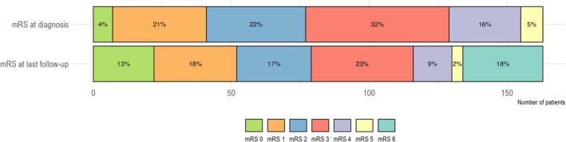
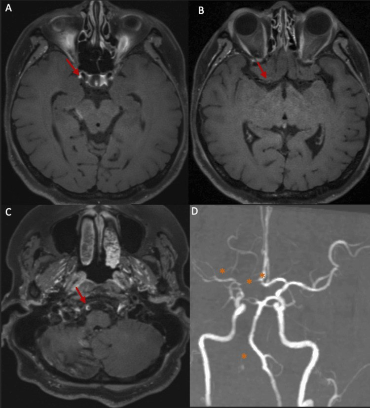
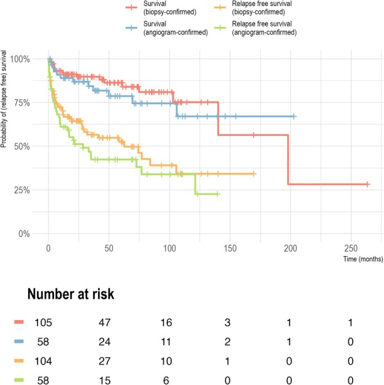

242 — PACNS: điều trị duy trì, lịch theo dõi tái phát & khi nào ngừng thuốc / PACNS long-term care: maintenance therapy, relapse surveillance and when to stop
Tags: pattern:viem-mach-nao vung:mach-nao vung:nao score:mRS protocol:HR-vwMRI protocol:theo-doi-mien-dich
Mức chắc chắn (certainty): tổng hợp y văn (literature synthesis) — số liệu từ 3 nguồn mở chính (PMC12542311 cohort 163 ca, PMC10712448 review thực hành, PMC13052826 tổng quan) + 1 ca nguyên văn (PMC13044975) cho quiz.
1. Tổng quan — vì sao PACNS phải duy trì thuốc lâu, và theo dõi bằng gì (TẠI SAO)
- Bệnh học: PACNS là viêm mạch mạch nhỏ và vừa giới hạn ở não – tủy – màng não, không có bệnh hệ thống. Ba thể mô bệnh: u hạt 32–61%, lympho 24–79%, hoại tử 14–42%. Thâm nhiễm chủ yếu tế bào T nhớ CD45R0+, kèm tăng IL-17 trong dịch não tủy và dấu ấn tế bào B/plasma trong DNT — tức là có "ổ nhớ" miễn dịch tại chỗ, giải thích vì sao bệnh tái phát dù lâm sàng đã lặng.
- TẠI SAO không dùng IL-17/DNT để theo dõi: IL-17 trong DNT tăng cả khi bệnh hoạt động và khi lui bệnh → không phải chỉ số theo dõi; DNT chỉ có giá trị loại trừ nhiễm trùng/tái phát khi có triệu chứng mới.
- TẠI SAO hình ảnh theo dõi được: ngấm thành mạch phản ánh tính thấm nội mô do viêm, không phải mô xơ. 50–75% bệnh nhân có thay đổi ngấm tương ứng hoạt động bệnh trên MR-vwMRI; ngược lại đường kính lòng mạch không giảm dù viêm đã hết (xơ hoá) → hẹp lòng cố định KHÔNG phải "thất bại điều trị".
- Ngưỡng định lượng nằm lòng:
- Tái phát: 82/163 (50%), trung vị 18 tháng (đoàn hệ Đức 13 trung tâm, theo dõi trung vị 42 tháng); đoàn hệ khác 58/191 (30%) trong trung vị 19 tháng. Tỷ lệ sống không tái phát dài hạn chỉ 21–66%.
- Kết cục: tử vong 29/163 (18%) (y văn 8–28%: 8–23% ở tổng quan, 11–28% ở review thực hành — thường trong năm đầu); mRS 3–6 ở 52%; 70,4% có khiếm khuyết chức năng tồn tại.
- Yếu tố tiên lượng xấu: tuổi (HR 1,96/10 tuổi cho tử vong), thời gian từ khởi phát đến chẩn đoán (HR 1,01/tháng), thể hoại tử (HR 10,2), mRS lúc chẩn đoán cao (OR 4,43).
- Hiệu quả thuốc: so với không điều trị, cyclophosphamide đơn trị HR 0,44 (0,22–0,86) và corticoid + cyclophosphamide HR 0,47 (0,24–0,92) cho tái phát; corticoid đơn trị HR 0,92 (0,49–1,75) — không có ý nghĩa.
- Thực hành phác đồ: tấn công methylprednisolone 500–1.000 mg/ngày × 3–5 ngày (nếu nặng), rồi prednisone 1 mg/kg (40–60 mg/ngày) trong 4 tuần rồi giảm liều chậm; giai đoạn tấn công ~6 tháng; sau đó duy trì bằng azathioprine hoặc mycophenolate; methotrexate không ưu tiên vì thấm vào não kém; tránh IVIG (nguy cơ huyết khối). Thời gian duy trì: 5 năm đến suốt đời, chưa có bằng chứng chọn độ dài.
- Theo dõi hình ảnh: chụp lại 8–12 tuần sau bắt đầu tấn công, 3–6 tháng sau đó, rồi mỗi 3–6 tháng; MRI/MRA + HR-vwMRI là lựa chọn ưu tiên vì đọc được lòng mạch + thành mạch + nhu mô cùng lúc.
- Sinh thiết: độ nhạy ≤ 75%; nếu nhắm đúng vùng bất thường trên HR-vwMRI độ nhạy lên 89%, còn sinh thiết "mù" thùy thái dương/trán không ưu thế chỉ 50%.
2. Mẫu hình + chẩn đoán phân biệt khi bệnh nhân ĐANG duy trì có triệu chứng mới (Gamut)
- 1. Tái phát hoạt động: đau đầu/cognitive mới + ngấm thành mạch mới hoặc tăng + nhồi máu ở lãnh thổ MỚI; thường sau khi giảm liều hoặc ngừng thuốc.
- 2. Di chứng cố định (pseudorelapse): nhồi máu cũ, hẹp lòng cố định, động kinh, trầm cảm — không ngấm mới, không tổn thương mới.
- 3. Nhiễm trùng cơ hội: Pneumocystis jirovecii (phải dự phòng khi tấn công nặng), CMV, lao, nấm, Listeria — sốt + tăng tế bào DNT; đừng tăng ức chế miễn dịch.
- 4. Biến chứng thuốc: cyclophosphamide (viêm bàng quang xuất huyết, vô sinh, ức chế tủy), corticoid (đái tháo đường, loãng xương, nhiễm trùng), azathioprine (viêm tụy, ức chế tủy), mycophenolate (tiêu hoá).
- 5. Bắt chước mạch máu mới: RCVS do thuốc (serotonin, calcineurin inhibitor), xơ vữa tiến triển ở người lớn tuổi — hẹp mới nhưng không ngấm hoặc lệch tâm.
- 6. Ung thư: u lympho nội mạch (intravascular lymphoma) — sốt, tổn thương lan toả, chỉ chẩn đoán được bằng mô bệnh; đây là lý do không được "tăng corticoid mù".
- Mnemonic "R-D-I-D-A-U": Relapse · Damage · Infection · Drug toxicity · Atherosclerosis/RCVS · Unknown malignancy.
3. Bảng so sánh phân biệt (ma trận đối chiếu)
| Tình huống | Hình ảnh / xét nghiệm điển hình | Chốt vào (rule-in) | Chốt loại (rule-out) | Gợi ý xác nhận |
|---|---|---|---|---|
| Tái phát hoạt động | Ngấm thành mạch MỚI/tăng (VWE tăng ≥ 1 bậc), nhồi máu lãnh thổ mới, có thể tăng tế bào/protein DNT | Tổn thương mới + ngấm tăng + bệnh sử giảm liều | Chỉ hẹp lòng cũ, không ngấm mới, không tổn thương mới → di chứng | MRI/MRA + HR-vwMRI, DNT loại trừ nhiễm |
| Di chứng cố định | Ổ nhồi máu cũ, hẹp lòng ổn định, teo não, không ngấm mới | Hình ảnh không đổi qua ≥ 2 lần chụp + triệu chứng khớp tổn thương cũ | Ngấm mới/tăng, tổn thương mới → tái phát | So phim cũ từng lát; phục hồi chức năng |
| Nhiễm trùng cơ hội | Đám mờ phổi/PJP, ổ áp-xe não, tăng tế bào DNT ưu thế lympho/trung tính, CRP tăng | Sốt + ức chế miễn dịch + cấy/PCR dương | Không sốt, không ổ nhiễm, đáp ứng với ức chế miễn dịch | CT ngực, cấy máu/đờm, BAL, PCR DNT |
| RCVS do thuốc | Hẹp đa ổ "chuỗi hạt", không ngấm, hồi phục < 3 tháng sau ngừng thuốc | Yếu tố khởi phát mới + không ngấm + hồi phục | Ngấm đồng tâm mạnh, tiến triển → viêm | MRA lặp 2–3 tuần; ngừng thuốc nghi ngờ |
| Xơ vữa tiến triển | Lệch tâm, tái tạo dương, canxi hoá, ngấm mảng | Yếu tố nguy cơ + lệch tâm + không tăng tế bào DNT | Đồng tâm đều + ngấm mạnh + trẻ → viêm | HR-vwMRI, TOF, kiểm soát yếu tố nguy cơ |
| U lympho nội mạch | Tổn thương lan toả, ngấm nhu mô/màng não, không đáp ứng corticoid kéo dài | Sốt + LDH cao + tế bào ác tính trong DNT/tủy | Đáp ứng nhanh corticoid, tổn thương mạch điển hình → PACNS | Sinh thiết não/tủy xương; PET/CT |

Kaplan–Meier: sống còn và sống không tái phát ở 163 bệnh nhân PACNS, phân theo phương thức chẩn đoán (sinh thiết 64% vs chụp mạch 36%). Đường cong không đi ngang — tái phát tiếp tục tích luỹ trong nhiều năm, nền tảng của chỉ định duy trì dài hạn. Nguồn: Fisse AL et al., Ann Neurol 2025 (PMC12542311), CC BY 4.0.Ảnh theo dõi thực tế: ngấm giảm nhưng hẹp lòng còn

Nữ 44 tuổi, PACNS sau corticoid liều cao + azathioprine: (A–B) ngấm và dày thành đồng tâm GIẢM so với lần trước; (C–D) hẹp lòng V4 phải và M1 phải vẫn còn, ngấm tồn dư, không có lãnh thổ mới. Đây là đáp ứng điều trị — không phải thất bại. Nguồn: Ali M et al., Cureus 2026 (PMC13044975), CC BY 4.0.4. Protocol điều trị – theo dõi + thuật toán
- Tấn công (induction):
- Nặng (ổ nhồi máu lớn, bệnh não, động kinh, thiếu hụt đe doạ chức năng): methylprednisolone TM 500–1.000 mg/ngày × 3–5 ngày, sau đó prednisone 1 mg/kg (40–60 mg/ngày) × 4 tuần, rồi giảm chậm.
- Thêm thuốc thứ hai ngay từ đầu: cyclophosphamide là lựa chọn mặc định ở thể nặng; dự phòng Pneumocystis khi tấn công mạnh.
- Nhẹ: corticoid uống ± mycophenolate/azathioprine/cyclophosphamide; methotrexate không ưu tiên (thấm não kém).
- Chuyển duy trì: sau ~6 tháng tấn công → azathioprine hoặc mycophenolate (ưu tiên), giảm corticoid dần; không dùng IVIG (nguy cơ huyết khối).
- Theo dõi:
- Lâm sàng sớm (2–4 tuần lần đầu), rồi mỗi 3 tháng.
- MRI/MRA + HR-vwMRI: 8–12 tuần sau bắt đầu tấn công, 3–6 tháng sau đó, rồi mỗi 3–6 tháng; đọc ngấm + độ dày thành là chỉ số hoạt động.
- Xét nghiệm độc tính: công thức máu, men gan, creatinin, tổng phân tích nước tiểu (cyclophosphamide), lipase (azathioprine), HbA1c/loãng xương (corticoid).
- DNT chỉ khi có triệu chứng mới hoặc nghi nhiễm — không dùng IL-17 để theo dõi.
- Khi nào ngừng: chỉ cân nhắc ≥ 5 năm lui bệnh liên tục + không ngấm thành mạch + không tổn thương mới + thể đơn pha, không tái phát; ngược lại (đã tái phát, thể hoại tử/ABRA, còn ngấm) → duy trì kéo dài/suốt đời. Không có thử nghiệm lâm sàng nào xác định độ dài tối ưu.
flowchart TD
A[PACNS đã chẩn đoán] --> B[Tấn công corticoid liều cao]
B --> C{Thể nặng hoặc hoại tử hoặc ABRA}
C -->|Có| D[Thêm cyclophosphamide, dự phòng PJP]
C -->|Không| E[Cân nhắc mycophenolate hoặc azathioprine]
D --> F[Sau khoảng 6 tháng chuyển duy trì]
E --> F
F --> G[Theo dõi lâm sàng và HR-vwMRI 3 đến 6 tháng]
G --> H{Triệu chứng mới}
H -->|Không| I[Tiếp tục duy trì, đánh giá ngừng sau 5 năm lui bệnh]
H -->|Có| J[Chụp lại và chọc DNT, loại trừ nhiễm trùng]
J --> K{Ngấm mới hoặc tăng và tổn thương mới}
K -->|Có| L[Tái phát: tấn công lại hoặc đổi thuốc]
K -->|Không, chỉ hẹp lòng cũ| M[Di chứng: phục hồi chức năng, không tăng ức chế miễn dịch]
5. Biến thể bình thường và cạm bẫy
- Đọc hẹp lòng cố định là "không đáp ứng": sau viêm, thành mạch xơ hoá — hẹp lòng có thể không đổi hoặc chỉ giảm 7/17 ca dù ngấm đã giảm; tăng thuốc chỉ vì "hẹp còn" là tăng ức chế miễn dịch oan.
- Corticoid che dấu hoạt động: ngấm thành mạch giảm khả năng phát hiện sau 2 ngày dùng corticoid → chụp trong đợt tấn công mà đã dùng thuốc 3–5 ngày thì dễ âm tính giả, không kết luận "hết bệnh".
- Tăng tế bào DNT không đồng nghĩa tái phát: ưu tiên loại trừ nhiễm trùng (PJP, lao, nấm) trước khi tăng ức chế miễn dịch; DNT trong PACNS có thể tăng tế bào nhẹ mạn tính.
- Kháng kết tập tiểu cầu không có chỉ định thường quy: chỉ dùng khi có chỉ định khác (rung nhĩ, dự phòng thứ phát do xơ vữa) — không phải "điều trị PACNS".
- Đừng nhầm đáp ứng với khỏi bệnh: ngấm giảm là đáp ứng, nhưng bệnh có thể tái phát sau nhiều năm (trung vị 18 tháng, đuôi dài) → lịch theo dõi không được cắt ngắn sau 1 năm.
- Rituximab không phải first-line: cơ chế hấp dẫn (tế bào B/plasma trong DNT) nhưng bằng chứng chỉ ở ca kháng trị; TNF-α inhibitor cũng chỉ cho ca kháng trị.
6. Tự lượng giá — Blind Quiz
Ca 1 — Nhìn biểu đồ phác đồ theo thời gian, trả lời trước khi mở đáp án.

- Câu hỏi: (1) Phác đồ phổ biến nhất lúc khởi đầu? (2) Ở 6 tháng? (3) Ở 5 năm? (4) Điều này nói gì về chiến lược duy trì?
Bấm để hiện đáp án
- Khởi đầu: corticoid đơn trị 45%, corticoid + cyclophosphamide 22%.
- 6 tháng: cyclophosphamide đơn trị 26% và corticoid + cyclophosphamide 24% — tức là giai đoạn tấn công bằng cyclophosphamide.
- 5 năm: 37% không còn thuốc ức chế miễn dịch, 35% dùng thuốc khác ngoài corticoid/cyclophosphamide (azathioprine, mycophenolate, rituximab…).
- Ý nghĩa: thực hành là tấn công ngắn → duy trì bằng thuốc dung nạp tốt hơn → một phần ba bệnh nhân ngừng được thuốc; nhưng chọn ai ngừng vẫn là quyết định cá thể hoá.
- Nguồn: Fisse AL et al., Ann Neurol 2025 (PMC12542311), Hình 3 — CC BY 4.0.
Ca 2 — Cùng bộ đường cong Kaplan–Meier: đọc trước, mở sau.
- Câu hỏi: Vì sao phải duy trì thuốc nhiều năm thay vì 6–12 tháng?
Bấm để hiện đáp án
- Đường sống không tái phát tiếp tục giảm dần theo thời gian, không đạt plateau — tái phát 50% (82/163), trung vị 18 tháng, có ca muộn sau nhiều năm.
- Vì vậy "lui bệnh 1 năm" không đồng nghĩa "khỏi"; thời gian duy trì thực hành 5 năm đến suốt đời, tuỳ thể bệnh và lần tái phát.
- Nguồn: Fisse AL et al., Ann Neurol 2025 (PMC12542311), Hình 2 — CC BY 4.0.
Ca 3 — Nữ 44 tuổi, PACNS (sinh thiết bị từ chối), sau corticoid liều cao + azathioprine. Chụp lại sau ~1 tháng điều trị.
- Câu hỏi: (1) Ngấm thay đổi thế nào? (2) Hẹp lòng còn — có phải thất bại điều trị? (3) Bước tiếp theo?
Bấm để hiện đáp án
- Ngấm + dày thành GIẢM so với lần trước (A–B) → đáp ứng điều trị.
- Hẹp lòng V4/M1 vẫn còn, ngấm tồn dư, không lãnh thổ mới (C–D) → không phải thất bại; hẹp là di chứng xơ hoá, không dùng đường kính lòng để quyết định tăng thuốc.
- Bước tiếp: tiếp tục azathioprine + giảm prednisone chậm, theo dõi lâm sàng + HR-vwMRI 3–6 tháng; cảnh giác nhiễm trùng cơ hội; bệnh nhân vẫn mRS 4 → cần phục hồi chức năng.
- Nguồn: Ali M et al., Cureus 2026 (PMC13044975), Hình 7 — CC BY 4.0.
Bài liên quan chéo
- 229 – PACNS vs RCVS: chẩn đoán phân biệt cốt lõi
- 241 – Đọc HR-vwMRI thành mạch nội sọ
- 219 – PRES & RCVS
- 203 – Neuro-Behçet & Behçet mạch máu lớn
Không dùng để chẩn đoán độc lập khi chưa có người hướng dẫn.